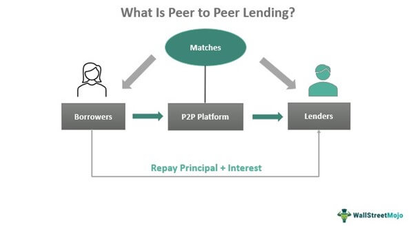

CashFlowAcademy
Home
Budgeting
Saving
Investing
Debt Management
Login
Peer To Peer Lending

Introduction to Peer-to-Peer Lending
Peer-to-Peer (P2P) lending, also known as marketplace lending, is a growing alternative financing method that connects individual borrowers directly with investors through online platforms. This innovative model bypasses traditional financial institutions, such as banks, allowing borrowers to access loans and investors to earn potential returns on their investments. P2P lending platforms match borrowers with investors based on their creditworthiness, risk profile, and loan requirements. Borrowers benefit from potentially lower interest rates and more accessible loan options, while investors have the opportunity to diversify their investment portfolio and earn interest income. P2P lending has gained popularity globally as it offers a win-win solution for both borrowers and investors seeking more streamlined, efficient, and transparent lending and investment opportunities.
How P2P Lending Works
In a typical P2P lending process, borrowers apply for loans through online platforms by providing their financial information, credit history, and loan amount. The lending platform evaluates the borrower's creditworthiness and assigns an appropriate interest rate to the loan. The loan listing is then made available to investors on the platform. Investors can review various loan opportunities and choose to fund all or part of a loan based on their risk appetite and investment criteria. Once enough investors commit to funding a loan, the borrower receives the loan amount, and they make regular repayments, including both principal and interest, back to the investors. P2P lending platforms handle loan servicing, managing the collection and distribution of payments between borrowers and investors. The platforms may charge fees to borrowers and investors for facilitating the loan transactions and managing the loan portfolios.
Benefits and Risks of P2P Lending
P2P lending offers several benefits to both borrowers and investors. For borrowers, P2P lending provides an alternative source of financing outside of traditional banks, especially for those with limited credit history or seeking faster loan approvals. The streamlined online application process and quick access to funds make P2P lending an attractive option for personal and business loans. Additionally, borrowers may find competitive interest rates based on their risk profile, often lower than those offered by traditional lenders. For investors, P2P lending presents an opportunity to earn potentially higher returns compared to traditional savings accounts or bonds. By diversifying their investments across various loans, investors can spread risk and potentially increase overall portfolio performance. However, it's essential to acknowledge that P2P lending is not without risks. Borrower default or late payments can lead to potential losses for investors, and the level of risk varies depending on the creditworthiness of the borrowers. It is crucial for both borrowers and investors to carefully assess their financial situations and risk tolerance before participating in P2P lending and consider utilizing reputable platforms with proper risk assessment and loan monitoring mechanisms.